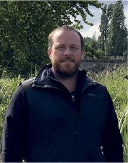

IAN BUCHANNAN / VETERINARIO
La Irenita es líder del mercado de producción de embriones en Argentina y a nivel mundial, habiendo logrado más de 10.000 embriones y teniendo un 100% de eficiencia en el sexado.
Posee una variada oferta tanto en técnicas como genética, ésta última basada en la amplia variedad de Padrillos. Su director, MV Sebastián Bereterbide y su mujer, MV Lucila Carbonell Hervás, residen en el Centro junto a su equipo y han logrado una gran eficiencia en la obtención exitosa de embriones basada en una constante incorporación de las más modernas técnicas.
ian@lairenita.com
